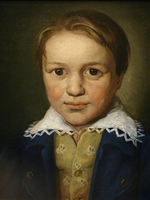
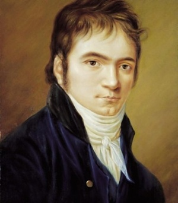

Бетховен – композитор, живший в эпоху Великой французской революции, проживший, прямо скажем, «собачью» жизнь. Он прошел сквозь испытания, сцепив зубы. Сущность его музыки – борьба человека с судьбой, с собой, с постоянными страданиями, поклонение революции и разочарование в ее «героях» (Наполеоне Бонапарте). Она помогает людям переносить трудности, физические и нравственные мучения, преодолевать страх, горе и потери.
Бетховен — ключевая фигура классической музыки в период между классицизмом и романтизмом, один из наиболее исполняемых композиторов в мире. Он писал во всех существовавших в его время жанрах, включая оперу, музыку к драматическим спектаклям, хоровые сочинения. Самыми значительными в его наследии считаются инструментальные произведения: фортепианные, скрипичные и виолончельные сонаты, концерты для фортепиано, для скрипки, квартеты, увертюры, симфонии. Творчество Бетховена оказало значительное воздействие на симфонизм XIX и XX веков.
Ранние годы

Людвиг ван Бетховен родился 16 декабря 1770 года в Бонне, крещен там же на следующий день.
Его отец, Иоганн ван Бетховен, был певцом-тенором в придворной капелле. Мать, Мария-Магдалина, до замужества Кеверих, родилась в семье придворного шеф-повара в Кобленце. Родители Людвига поженились в 1767 году.
Дед, Людвиг ван Бетховен, был родом из Мехелена (Южные Нидерланды). О голландских корнях рода также говорит приставка «ван». Он служил в той же капелле, что и Иоганн, сначала певцом (у него был бас), а затем – капельмейстером.
Отец композитора мечтал сделать из своего сына второго Моцарта и стал обучать игре на клавесине и скрипке. В 1778 году в Кёльне состоялось первое выступление Людвига. Однако чудо-ребенком Бетховен не стал, и отец, быстро охладев к затее, перепоручил мальчика своим коллегам и приятелям. Один обучал Людвига игре на органе, другой – на скрипке.
В 1782 году в Бонн приехал органист и композитор Кристиан Готлоб Нефе. Он стал настоящим учителем Людвига. Нефе сразу понял, что у мальчика талант, познакомил подростка с «Хорошо темперированным клавиром» Баха и произведениями Генделя, а также с музыкой старших современников: Ф. Э. Баха, Йозефа Гайдна и Вольфганга Амадея Моцарта. Благодаря Нефе было издано первое сочинение Бетховена – вариации на тему марша Дресслера. В то время автору исполнилось двенадцать лет, и он уже работал помощником придворного органиста.
После смерти деда материальное положение семьи ухудшилось. Людвигу пришлось рано бросить школу, но он самостоятельно выучил латынь, итальянский и французский, много читал.
Среди любимых писателей Бетховена были Гомер и Плутарх, Шекспир, Гете и Шиллер.
Юность

В это время Бетховен начал сочинять музыку, но не спешил печатать свои произведения. Многое написанное в Бонне впоследствии было им переработано. Из юношеских сочинений композитора известны три детские сонаты и несколько песен, в том числе «Сурок».
В 1787 году Бетховен посетил Вену и пришел к Моцарту. Прослушав его импровизацию, тот воскликнул: «Он всех заставит говорить о себе!»
Но занятия не состоялись: Бетховен узнал о болезни матери и вернулся в Бонн. Она умерла 17 июля 1787 года. Семнадцатилетний юноша был вынужден стать главой семьи и взять на себя заботу о младших братьях. Он поступил в оркестр в качестве альтиста.
В 1789 году Бетховен, желая продолжить образование, начинает посещать лекции в университете. Как раз в это время в Бонн приходит известие о революции во Франции. Студент Бетховен погружается в идеи революции, которые будут питать его творчество всю жизнь.
Проездом из Англии в Бонне остановился Гайдн, с одобрением откликнувшийся на композиторские опыты Бетховена. Юноша решает ехать в Вену и осенью 1792 года отправляется в Вену.
Приехав в Вену, Бетховен начал занятия с Гайдном… Впоследствии Людвиг утверждал, что тот ничему его не научил; занятия быстро разочаровали и ученика, и учителя. Бетховен считал, что Гайдн был недостаточно внимателен к его стараниям; а Гайдна пугали не только смелые по тем временам взгляды Людвига, но и довольно мрачные мелодии, что в те годы было малораспространенным.
«Ваши вещи прекрасные, это даже чудесные вещи, но то тут, то там в них встречается нечто странное, мрачное, так как вы сами немного угрюмы и странны; а стиль музыканта – это всегда он сам», – писал Гайдн своему гениальному ученику…
Вскоре Гайдн уехал в Англию и передал своего ученика известному педагогу и теоретику Альбрехтсбергеру. В конце концов Бетховен сам выбрал себе наставника – Антонио Сальери.
Бетховен-пианист
Уже в первые годы жизни в Вене музыкант завоевал славу пианиста-виртуоза.
Фортепиано лишь начало входить в европейский обиход, сменив клавесин с его своеобразным быстро затухающим, коротким, «цокающим», «металлическим» звуком. Бетховен смело противопоставлял крайние фортепианные регистры (на клавесине и поначалу на фортепиано играли в основном в середине клавиатуры), широко использовал педаль (к ней тогда тоже обращались редко) и массивные аккордовые созвучия. По сути, именно он создал фортепианный стиль, далекий от изысканной, «кружевной» манеры клавесинистов, применяющих множество мелких украшений, заполняющих быстро затухающий звук клавесина.
Этот несколько тяжеловесный, мрачноватый стиль можно услышать в его фортепианных сонатах №8 «Патетической» (название дано самим композитором), №13 и №14. Обе имеют авторский подзаголовок Sonata quasi una Fantasia («Соната почти фантазия»). Сонату №14 поэт Людвиг Рельштаб впоследствии назвал «Лунной», и, хотя это название подходит лишь к первой части, оно закрепилось за всем произведением. В тот момент композитор был влюблен в свою ученицу, итальянскую графиню Джульетту Гвиччарди, которой и посвятил «Лунную сонату». Впрочем, брак не состоялся, девушка предпочла гению-простолюдину его бесталанного родовитого коллегу, за которого и вышла замуж. Их брак распался, и спустя 20 лет Джульетта пришла просить у Бетховена денег. Позднее в письме к другу музыкант написал: «Она плакала, но я пренебрег ею»…
Характер и посыл музыки
Музыкант отличался крайней резкостью суждений и поведения. Однажды, когда он играл в публичном месте, один из гостей начал разговаривать с дамой; Бетховен тотчас оборвал выступление и добавил: «Таким свиньям я играть не буду!» И никакие извинения и уговоры не помогли.
В другой раз Бетховен гостил у князя Лихновского, который очень уважал композитора и был поклонником его музыки. Князь захотел, чтобы Бетховен сыграл перед собравшимися. Композитор отказался. Лихновский стал настаивать и даже приказал выломать дверь комнаты, где заперся Бетховен. Возмущенный композитор покинул имение и вернулся в Вену. Наутро он отправил Лихновскому письмо: «Князь! Тем, чем являюсь я, я обязан самому себе. Князей существуют и будут существовать тысячи, Бетховен же – только один!»
Однако, несмотря на столь суровый нрав, друзья считали Бетховена довольно добрым человеком, поскольку композитор никогда не отказывал им в помощи.
Все знают начальные такты бетховенской 5-й симфонии, о которой он сказал: «Так судьба стучится в дверь».
Ведя изнуряющую ежедневную борьбу с жизнью, с самим собой, Бетховен, который не раз думал наложить на себя руки, который прожил полжизни абсолютно глухим, сказал: «Я схвачу свою судьбу за глотку». Это был великий страдалец, великий борец и великий музыкант…
 Бетховен – композитор, живший в эпоху Великой французской революции, проживший, прямо скажем, «собачью» жизнь. Он прошел сквозь испытания, сцепив зубы. Сущность его музыки – борьба человека с судьбой, с собой, с постоянными страданиями, поклонение революции и разочарование в ее «героях» (Наполеоне Бонапарте). Она помогает людям переносить трудности, физические и нравственные мучения, преодолевать страх, горе и потери.
Бетховен – композитор, живший в эпоху Великой французской революции, проживший, прямо скажем, «собачью» жизнь. Он прошел сквозь испытания, сцепив зубы. Сущность его музыки – борьба человека с судьбой, с собой, с постоянными страданиями, поклонение революции и разочарование в ее «героях» (Наполеоне Бонапарте). Она помогает людям переносить трудности, физические и нравственные мучения, преодолевать страх, горе и потери.